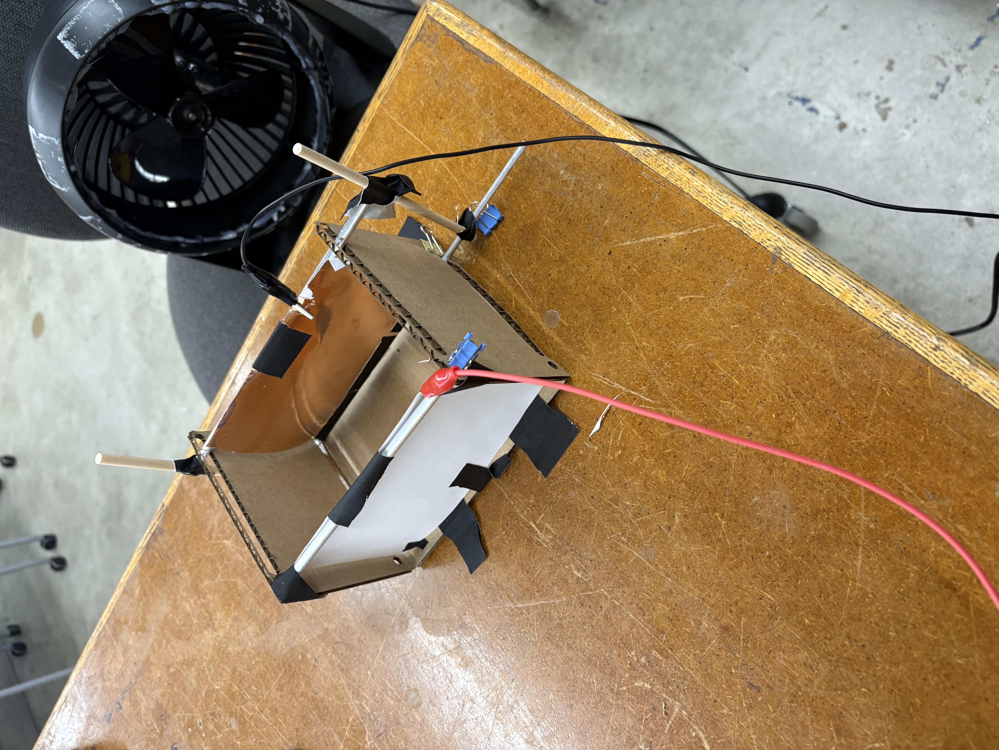
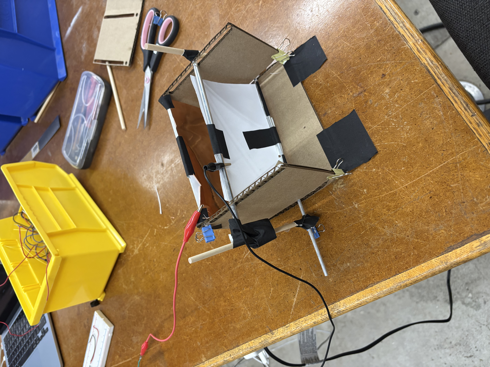

You have two assignments: create and calibrate a capacitive sensor and then use and calibrate another sensor.

| # | Result |
|---|---|
| 1 | -2321 |
| 2 | 745 |
| 3 | 3015 |
| 4 | 1875 |
| 5 | -1414 |
| 6 | -1998 |
| 7 | 182 |
| 8 | 859 |
| 9 | -162 |
| 10 | 4223 |
| 11 | 4513 |
| 12 | -518 |
| 13 | -469 |
| 14 | -5 |
| 15 | 3026 |

| # | Result |
|---|---|
| 1 | -1160 |
| 2 | 372 |
| 3 | 1507 |
| 4 | 937 |
| 5 | -707 |
| 6 | -999 |
| 7 | 91 |
| 8 | 430 |
| 9 | -81 |
| 10 | 2112 |
| 11 | 2257 |
| 12 | -259 |
| 13 | -235 |
| 14 | -3 |
| 15 | 1513 |
Sensor cooled from 70°C to 40°C across 15 measurements. Two-point calibration model: Temperature = 0.4950 × Value + 2.28 (calibrated at ADC 56 → 30°C and ADC 157 → 80°C).
| Statistic | ADC Value | Temperature (°C) |
|---|---|---|
| High (Max) | 110 | 56.7 |
| Q3 | 106 | 54.8 |
| Q2 (Median) | 95 | 49.3 |
| Q1 | 76.5 | 40.1 |
| Low (Min) | 55 | 29.5 |
| Temperature (°C) | Expected ADC value |
|---|---|
| 30°C | 56 |
| 50°C | 96 |
| 60°C | 117 |
| 70°C | 137 |